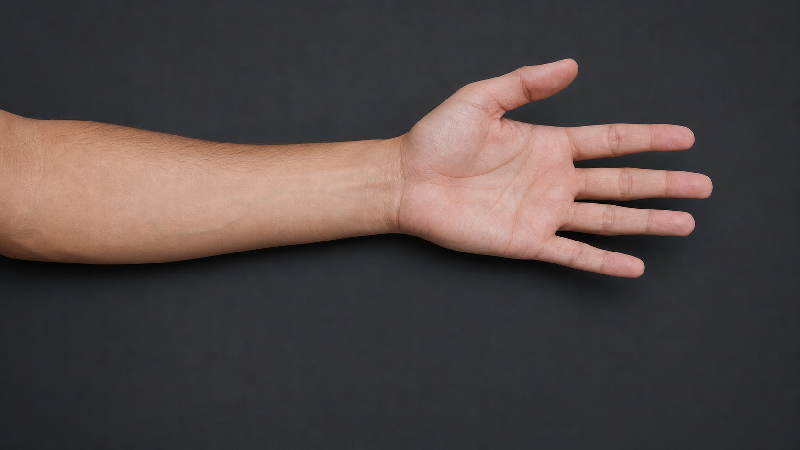

Hacim iletimi sinir yanıtından önce kayıt elektrotlarına ulaşır
Aynı uyarı · iki farklı varış zamanı

1 · t=0 Hacim iletimi → artefakt
2 · iletim süresi Sinir volleyi ilerler
3 · ≈latans DSAP kayıt elektrotlarına gelir
Artefakt kuyruğu DSAP’tan önce bazale döner
Ölçüm doğru
kaydedilen izgerçek DSAPartefakt bileşeni